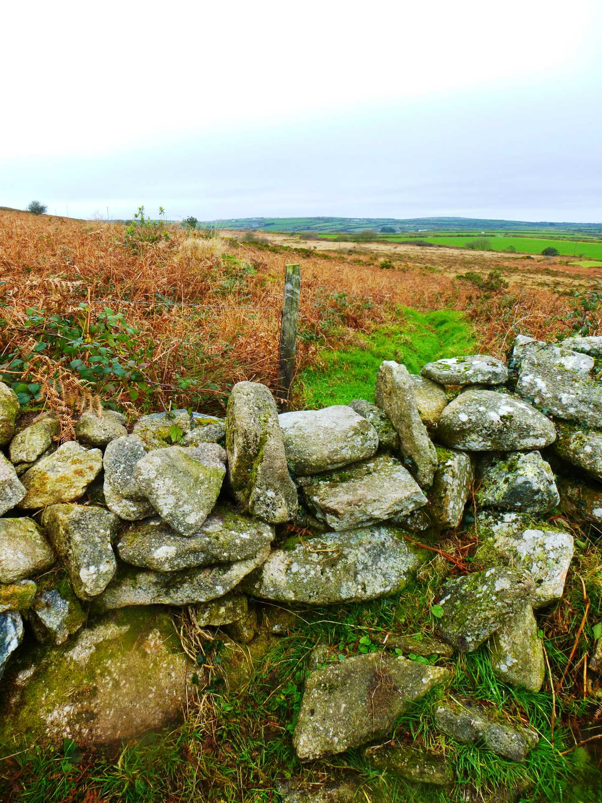
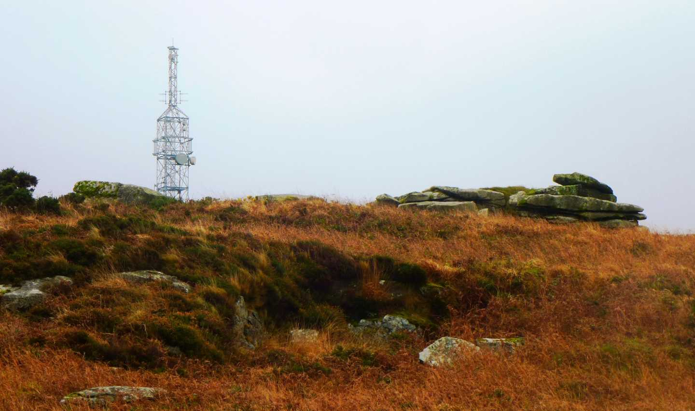

Start Ref: 6885 3635
End Ref: 6885 3635
Distance: 3 miles
Time: 1.5hrs
We start this walk by leaving our car in a lay-by on the Western side of Carnmenellis by Phillpots Farm and from here follow the road back up towards Penmarth. First going around a sharp left and then, as the road bears right again, we pick up the little lane directly opposite and follow it up. There is a footpath on our left just before we walk around to our right (we will return along this path).
Bear around to the right and on towards the house. The footpath runs between the house (left hand side) and the hedge. It is correct, although it feels a little strange being in someone’s garden! This section is now lovely and flat as we pass through a mixture of easy Open Access land and fields, passing over two fields and another garden! After going over several hedge stiles we are led into a short, high sided lane which finishes just above a house. Here the footpath is not clear, so as you step over the concrete plinth at the end, go left through the gate and follow this field alongside the house, over a stile and back on to the tarmac path.
This now leads down the road, where we again turn immediately left (NNE) passing several rather nice farm buildings. After a few hundred meters the footpath takes us over into the field on our right, where we will follow its Eastern hedge for 4 fields. At the end of this field system, we go over another stile and are back on Open Access land. Here, although the mapped footpath keeps you heading North, we actually find that the trodden path goes NE. Follow this as it leads to a wider path that in turn goes North and follows the path we actually want to take. Here we start to have views of Stithians Lake and Carnmenellis Mast – and if you are lucky, as I have been, deer. We follow the track just to the West of North, always keeping the hedge close on our right until we come out on a made up track just to the west of Menherion Farm.
Here we now move on to the Bridleway, as the footpaths are either overgrown or over difficult terrain. We follow this path around to the left and as we come to a gate, we head right and follow this lane until we come out in a field. The exit for us is halfway along the Western side of this field (ahead and to the left as we enter), and we can follow this now wide grassy track until we come to a cross roads (of sorts) of lanes and footpaths. Turn left (Southerly) through the second gate and follow the field keeping the hedge on our right. In the last field we will pass over a stile which drops us down into the field below and suddenly we are back in the lane near where we started and find ourselves retracing our footsteps as we now turn right and down the track to the road.
Follow this road straight ahead and around a sharp right, and then the lay-by we started in, is just ahead on the left.
This is quite a short, relatively level walk with some quite wide ranging views. Many of the footpaths over the Open Access Land are overgrown, so the ones I have suggested for this walk are the well trodden ones.
I hope that you enjoy.